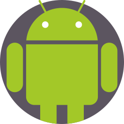

Projects
StudyGo - September-December 2024
StudyGob is an academic social media app with the goal of facilitating good study habits for students and raising the average GPA of participating Universities and consequently their students. This will be achieved by incentivizing studying at different locations near campus through giving them discount codes at participating locations. These locations are intended to be business that create accounts on our app for advertising themselves and growing the relationship between the univerities and communities! This app will allow users to connect either one on one or by public group sessions through networking and a messaging platform. Students have the option to track their grades per class and see a visualization of study time to grade performance over a semester. Teachers will be able to use this app to set up different study events and companies can set-up study events as well. This will all be achievable through web browser, Android, and iOS applications. This project was the test run for our current project, Scholara.



Hoohacks Hackathon : Emergency Void Detection Program - Spring 2024
This application was built in a team of four people. Our team had 24 hours to code a project from scratch and compete for prizes.
Our goal was to create an application that protected the public against harm. Our idea was Fruble.
This project is geared towards public safety. Unfortunately, people end up in positions where they need help
but cannot use their mobile device due to dangerous conditions.
Our application uses audio detection software to allow the user to use a safe sentence.
Doing so will alert local authorities and send an SMS message to contacts of their choosing along with
their location with live updates.
Link : GitHub-Fruble